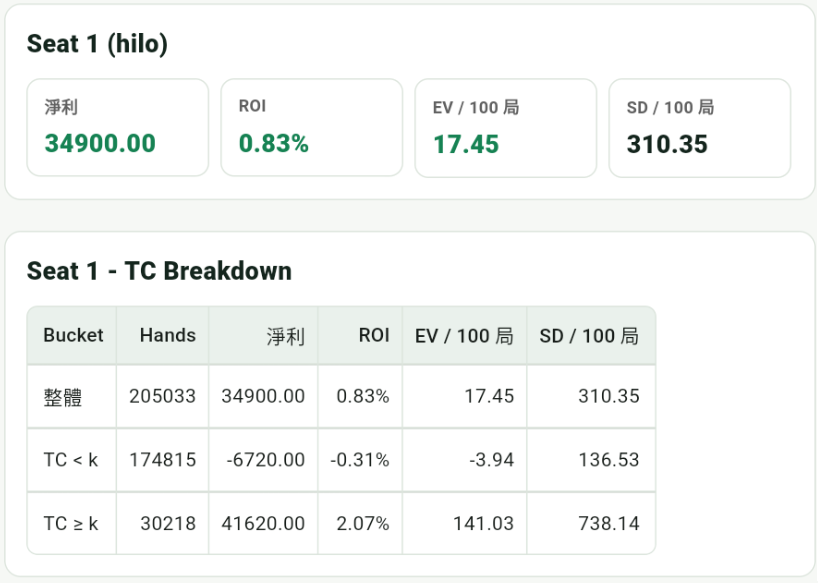
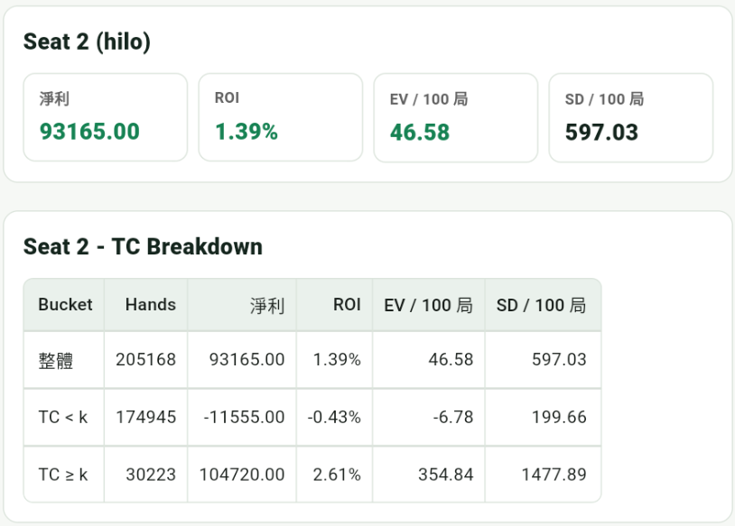

Bet Ramp
算牌最實際的價值，通常來自在 TC 高的時候加大下注。Bet ramp 就是把 true count 轉換成下注大小的規則。
| TC | 下注單位 | 意義 |
|---|---|---|
| ≤ 0 | 1 | 通常沒有優勢 |
| +1 | 2 | 開始有些微優勢 |
| +2 | 4 | 優勢更明顯 |
| +3 | 6 | 高牌密度偏強 |
| ≥ +4 | 8 | 優勢強，但波動仍大 |
這只是教學示意。實際下注大小會強烈受到 bankroll、桌限、桌規、牌靴穿透率與風險承受度影響。
App 模擬統計
以下結果使用 Hi-Lo，並以不同 Bet Ramp 跑 200000 局，比較下注級距提高後的 EV 與波動變化。


可以看到，Bet Ramp 較大的 Seat 2 整體期望值較高，EV / 100 局也明顯提高；但同時 SD / 100 局也變大，代表下注放大優勢的同時，短期波動也會跟著增加。
Kelly 直覺
Kelly 的核心是下注大小和 edge / variance 的關係。優勢越大可以下得更多，但波動大時仍然需要保守。
初學時先理解 bet ramp 的概念，不要把範例級距直接當成固定公式。